Chapter 4 Lab 4
4.1 Introduction
In this lab, you are going to begin to become accustomed to randomly generating data of different types in R, generating appropriate plots for different types of data, reading in real data and checking data sets, summarising variables, and plotting real data. The last sections of this lab are intended to be completed as homework, however if you get it all done in the 2 hours - good for you. So let’s get started.
Before we begin, set up a project for today’s lab!
4.2 Simple Plots
4.2.1 Categorical Variables
Let’s start with the visualization of binary variables. First, let’s randomly generate a single binary variable.
# Randomly Generate a Single Binary Variable
x_bin <- rbinom(100, 1, .6)Take a look at ?rbinom and try to work out what frequency of 1s we might expect to see in x_bin? We will come back to this shortly.
Now let’s look to make a plot of this variable.
plot(x_bin)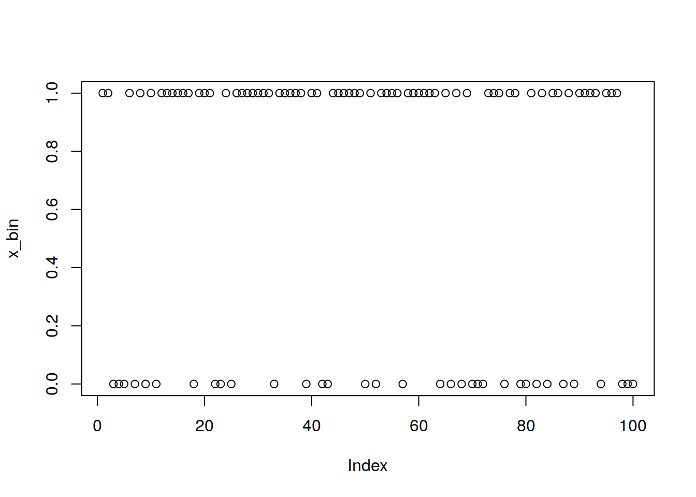
What has gone wrong here?
plot() is generally quite a clever function in that it will produce appropriate plots for the type of data we give it. But we need to make sure the variables we give plot() are of the type we would like. Let’s check whether the variable we created is being treated as a factor (R language for categorical variables):
is.factor(x_bin) #Asking R whether x_bin is being treated as a factor.## [1] FALSESo R is not recognising our variable as a categorical variable. What is R treating the xbin as;
class(x_bin)## [1] "integer"We want this to be a factor (nominal categories), so We can change the status of this variable as follows:
x_bin <- as.factor(x_bin)
is.factor(x_bin)## [1] TRUEExcellent! R now recognises the variable as a categorical variable. Now let’s see what plot() does:
plot(x_bin)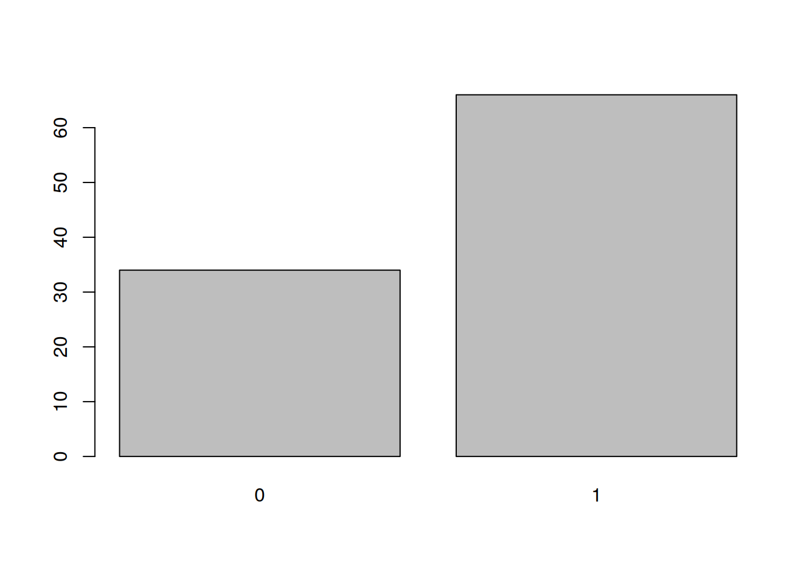
plot() has now given us a very basic frequency bar chart of 0s and 1s, for the variable x_bin.
Let’s briefly return to the question above - what is the frequency of 1s in x_bin? From looking at the plot above, we can see there are more 1s than 0s, but as it stands the plot is not much use to us in seeing the exact frequency (we will deal with editing plots shortly). Let’s ask R to give us the actual frequencies of 0s and 1s:
table(x_bin) # this produces a frequency table for our variable## x_bin
## 0 1
## 34 66
Task: : So, thinking back to how we specified the creation of our random variable (rbinom(100, 1, .6)), why is it we do not have 60 1s? Also, why is it that you may have a different number of 1s to the person sat next to you?
Hopefully you can see that this is your first taste of probability theory and random variables (although you may not have quite phrased it that way), which we will discuss lots more next week. For now, lets continue looking at plots. Note from this point on your plots will look different to mine (and your neighbours) because you have different random variables.
Now let’s create a second binary variable and create a mini data set with both variables:
y_bin <- rbinom(100, 1, .75)
# look at the frequencies of 0 and 1
table(y_bin)## y_bin
## 0 1
## 20 80# tell R y_bin is a binary categorical variable
y_bin <- as.factor(y_bin)
# cbind() combines two columns into a single object, here called data
data <- cbind(x_bin, y_bin)
# shows the column and row names and the first few lines of data
head(data)## x_bin y_bin
## [1,] 2 2
## [2,] 2 1
## [3,] 1 2
## [4,] 1 2
## [5,] 1 2
## [6,] 2 1Task: : Look at the first few lines carefully. Why is R showing the values of x_bin and y_bin to be 1 and 2 instead of 0 and 1? More importantly, if we assume this is a nominal variable, does this matter?
A very quick refresher on indexing. R uses 2-dimensional indexing with [ ] when indexing rows, columns and individual cells in a data frame or matrix. The numbers appear in the order [row, column]. So;
[1, ]= the first row[ , 1]= the first column[1, 1]= the value in the first row, first column
Indexing is a very useful tool. We can use it to highlight individual elements, perform tasks on single rows or columns, subset data etc. Indexing will appear in lots of the code that follows. You can use the basic rules here to help you “read R”. As an example:
data[3, 2] #calls the value in the third row, second column of our data set## y_bin
## 2head(data) # which we can check by looking the top few rows of data## x_bin y_bin
## [1,] 2 2
## [2,] 2 1
## [3,] 1 2
## [4,] 1 2
## [5,] 1 2
## [6,] 2 1You can play around with this a little if you are not yet convinced. For example, we could use indexing to give us the total number of 1s in the first column;
sum(data[ , 1] == 1)## [1] 34We can then check this is correct using the table() function again.
table(data[ , 1]) #then we can check the answer using table()##
## 1 2
## 34 66Task: What is the code line sum(data[ , 1] == 1) doing? Although in principle this is quite simple, how R does something of this sort takes a bit of getting used to. Hint: Think logical vectors.
One last thing before we get back to plots. I want to give our variables names so we can pretend we have collected real data (instead of just simulating). So, here we use colnames() to change the names of the variables. We create a vector of new names, here "programme" and "over18", and then we assign this to data:
colnames(data) <- c("programme", "over18")
head(data) # we can then check the names have changed## programme over18
## [1,] 2 2
## [2,] 2 1
## [3,] 1 2
## [4,] 1 2
## [5,] 1 2
## [6,] 2 1This is good. But now we need our numerical labels to mean something consistent with the variable names. So we need to assign verbal labels to the numerical values.
# To manipulate our data, we first make it a data frame
data <- as.data.frame(data)
# Now we make sure our variable is recognised as a factor
data$programme <- as.factor(data$programme)
is.factor(data$programme)## [1] TRUEOK, all looking good so far. Remember you looked up logical vectors earlier, well you should recognise that when we use is.factor() (asking R a direct question of whether the variable is a factor or not) it returns a logical vector.
Before we assign verbal labels to the numerical values, we should first check how many levels (in R speak, levels are the number of unique numerical labels) we have:
levels(data$programme) ## [1] "1" "2"And we can see we have 2 levels with numerical labels 1 and 2. So now we assign new informative verbal labels:
levels(data$programme) <- c("Psychology", "Linguistics") Task: Now do the same for the over18 variable but, this time, use indexing in our code.
data[, 2] <- as.factor(data[, 2])
is.factor(data[, 2])## [1] TRUElevels(data[, 2])## [1] "1" "2"levels(data[, 2]) <- c("Yes", "No")Task: Back to plotting (finally)! Let’s look at the bar plots of the frequencies for both variables:
plot(data$programme)
plot(data[, 2]) # indexing works too but notice axis labels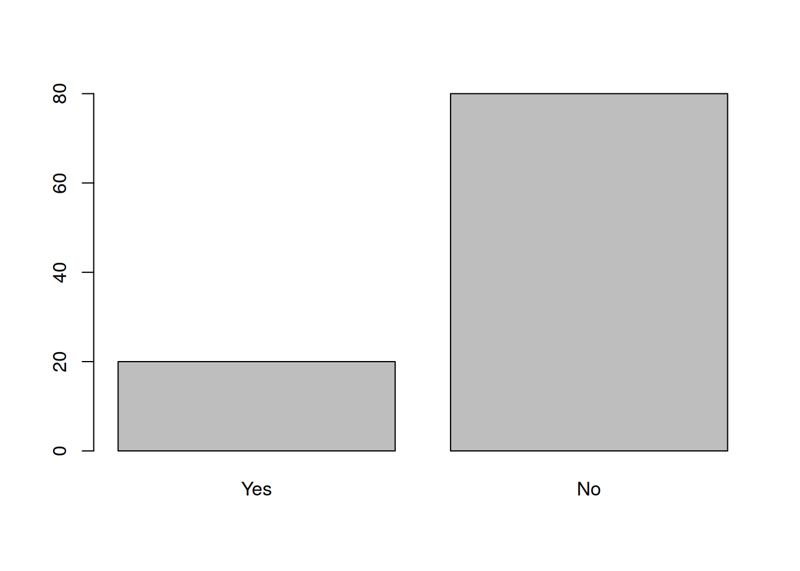
Now, if we want to consider the ratio of psychologists and linguists who are over 18, we can compute a mosaic plot. To do this we simply give plot() two categorical variables.
Task: Why don’t you try it yourself!
plot(data$programme, data$over18)
Time to Think: What do you think would happen if we used data[, 1] instead of data$programme? What can we conclude from this plot? Are there proportionally more psychologists than linguists 18+? Again, why does your plot look different to mine and your neighbour?
We can extend all the principles above to considering multiple nominal variables. Let’s add a variable to our data called sport. Let’s suppose our sample of 100 people play five sports (football, running, hockey, golf & swimming).
Task: Let’s create this variable. sample() is going to come in handy here.
data$sport <- factor(sample(c("football", "running", "hockey", "golf", "swimming"),
100, replace = T))Task: Look at the bar chart for the sport variable.
plot(data$sport)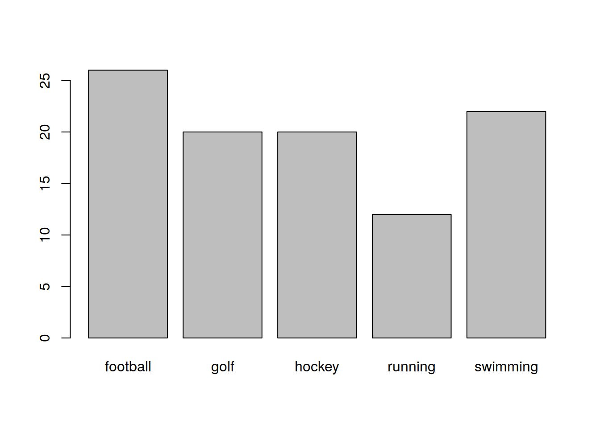
Task: Now ask for a mosaic plot of sport by programme:
plot(data[, 1], data[, 3])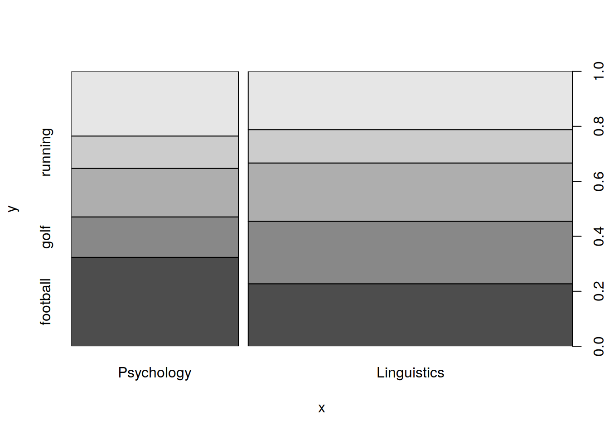
Time to think: Look at the help for ?sample. Look at the third argument, prob in the help and think about the lecture on probability. Can you work out from the help what the default settings for the weights are? How do you think the mosaic plot may change if we changed these weights? If you want to play with the weights you can. Add the argument prob = c() to the code for creating the sport variable. Inside the parentheses, list 5 numbers which sum to 1. For example: prob = c(.1, .5, .2, .1, .1).
Note: You could try to make these meaningful by estimating the actual popularities of these sports.
4.2.1 Plotting order
With all of the plots in this section, it really doesn’t matter what order we plot the variables in as they are nominal variables. There is no order of presentation for programme which makes more logical sense than any other. However, the same is not true for ordered categorical variables.
4.2.2 Ordinal Categorical Variables
For ordered categorical data, our primary tool for visualization is the same as for the binary and nominal variables - the bar plot. However, here, order matters for reasons that should be clear from the lecture. Unlike nominal categorical variables, order does matter and we want to preserve this in our visualizations.
Remember, with an ordered categorical variable we often assume that the data we observe come from a truly normally distributed variable, but that our measurements are coarsely categorized. For the purpose of our generated data, let’s create a variable, fitness, that is individuals self-rated fitness level on a scale of 1-8:
norm <- rnorm(100, 0, 1) # start by creating a random normal variable
initial_fitness <- cut(norm, 8)
initial_fitness <- as.numeric(initial_fitness)Here we first cut our normally distributed variable into 8 categories, and then told R that this new variable initial_fitness was numeric. However, in R, we can easily put functions within other functions, so we could have written the same thing as:
initial_fitness <- as.numeric(cut(norm, 8))
Look out for this as we go through the practical.
In the second line, we have used the cut() function to create 8 equally sized groups from our normally distributed variable. These represent our coarse divisions of an underlying normal variable. We use as.numeric() to tell R we want to treat this variable as if it were numeric, not as a factor.
Remember: There is much debate about whether coarsely categorized variables should be treated as continuous or not. This is an important decision you will have to make in your own analyses and you will need to make sure you have told R what type of variable each variable in your data set is. As an aside, if you want to check what R thinks each variable is, you can use:
class(initial_fitness)## [1] "numeric"We can see how the distribution of our variables degrades when we coarsely categorize norm by using histograms.
Task: Look at the histograms of norm and initial_fitness. If you’ve been using plot() until now, this time use hist())
hist(norm)
hist(initial_fitness)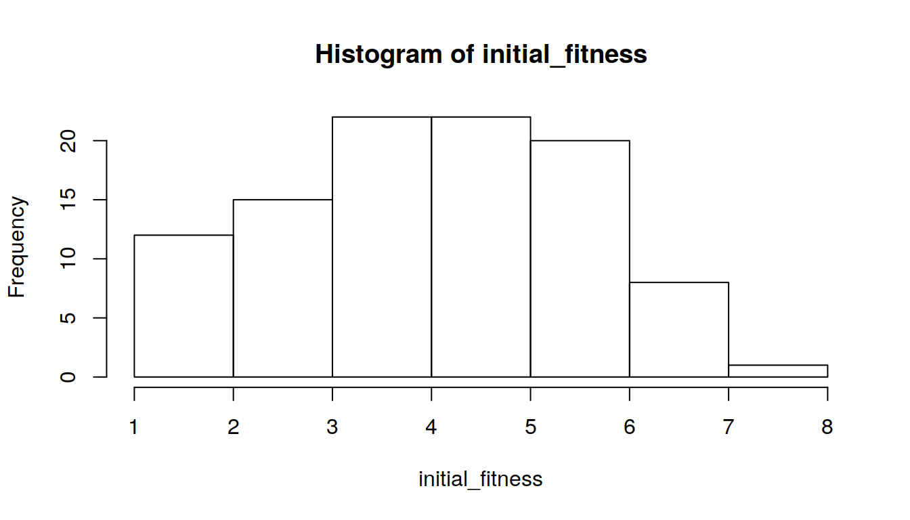
Task: With 8 categories, this does not look too bad, but what would it look like if we used say 4 categories? Check this out, create a new variable with a different name, and use the cut() function and the continuous variable norm to categorize it. Then plot it on a bar chart.
barplot(table(as.numeric(cut(norm, 4))), xlab = "Categorised fitness")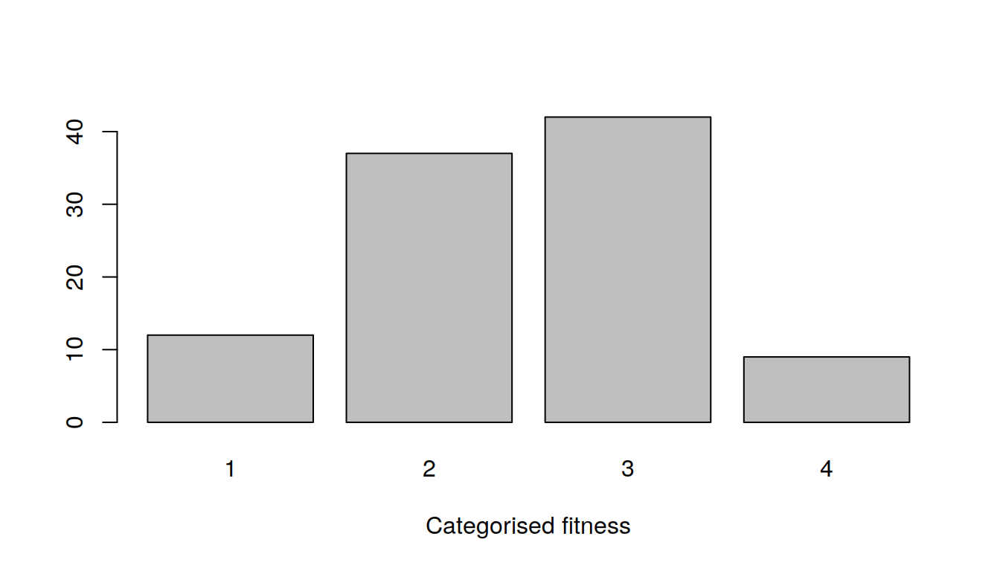
Now let’s add initial_fitness to the data set. We could just attach it as it is, but to show you another method to manipulate your data, let’s jumble up the order a bit using sample().
fitness <- sample(initial_fitness, 100, replace = F)Time to Think: We have used sample() before. Have a go at describing what we are doing with sample here. Hint: use ?sample and focus on size we have requested (given sample size), and what it might mean to not replace values.
We can then compare the first few lines to see we have jumbled it up, and the cell frequencies to show this is all we have done;
head(initial_fitness)## [1] 4 5 6 3 7 6head(fitness)## [1] 4 6 3 4 8 6table(initial_fitness)## initial_fitness
## 1 2 3 4 5 6 7 8
## 5 7 15 22 22 20 8 1table(fitness)## fitness
## 1 2 3 4 5 6 7 8
## 5 7 15 22 22 20 8 1Task: Let’s add it to our other data.
data$fitness <- fitness # add fitness4.2.3 Continuous Variables
In some cases our variables will truly be continuously measured on a ratio scale. When this is the case, we can visualize the distribution of the variable in a number of ways. We can use a histogram, but in doing so we need to decide how many bins to use. Alternatively, we can use a kernel density plot. We have gone over a number of examples of this slowly, so let’s do this in one quick hit of code.
Task: Create a normally distributed variable weight (let’s say in kg, with mean = 81 and SD = 12) in data and plot it on a histogram.
data$weight <- sample(rnorm(100, 81, 12), replace = F)
hist(data$weight)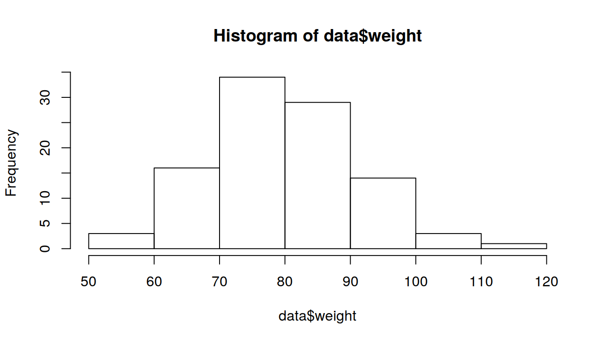
Task: Now try creating a density plot of the variable.
plot(density(data$weight))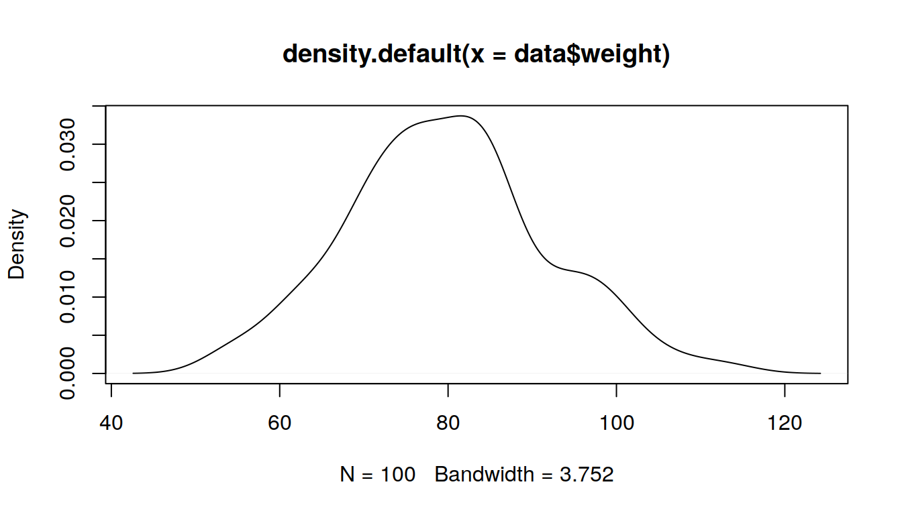
4.3 Scatterplots: Visualizing associations
Sometimes we might want to use plots to look at the relations between variables. We will cover lots of different types of plots to do this as the course progresses (particularly plots which help check assumptions in GLM). As a simple case, consider looking at the relationship between two continuous variables. We already have two variables we are treating as continuous in our data, Fitness and Weight.
This time, instead of giving plot a single variable, we give it two. Again, it is smart enough to know what to do with these data:
plot(data$fitness, data$weight)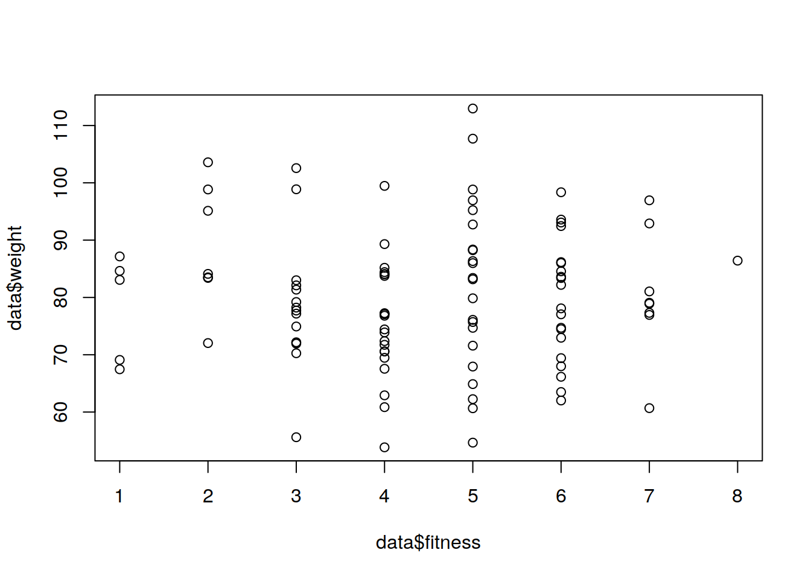
Time to Think: Although we are treating fitness as continuous, this scatterplot looks odd. Why do you think this is?
Task: Instead of using the categorized variable fitness, why don’t we use the norm instead. Though not in your data set, this is still in your R environment (look down the values list in the top right).
plot(norm, data$weight)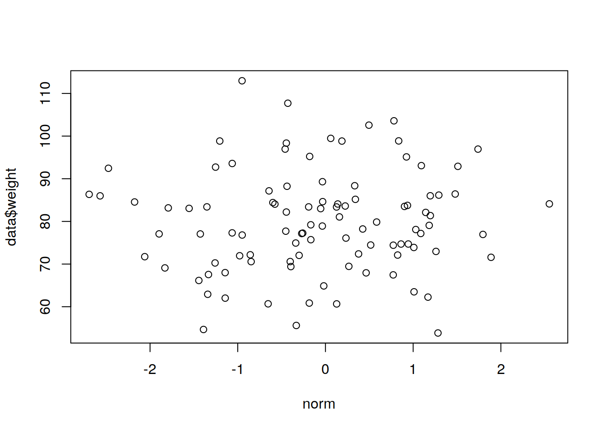
4.4 Boxplots: Visualizing group differences
So, the scatterplot gives us the association between two variables, but what about comparing the mean score on a continuous variable given a categorical variable. This type of plot is very useful if you are conducting a t-test (next week!). You have in fact already done this in the first lab, so this code should seem familiar and we wont linger on it:
# I am using this here to remind myself how each of the variables is named in data
names(data)## [1] "programme" "over18" "sport" "fitness" "weight"boxplot(weight~programme, data = data)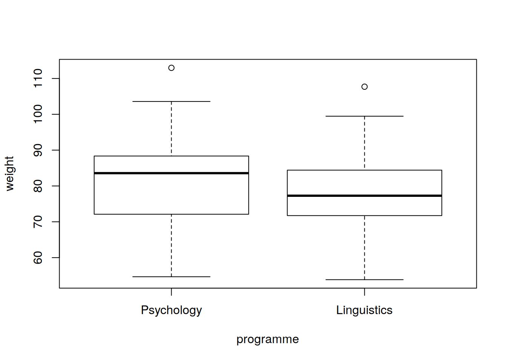
4.5 Descriptive Statistics
As well as the basics of plotting, it is also useful to be able to produce basic descriptive statistics for the variables in your data set. So let’s look at the options for this. My preference for descriptive statistics is to use the describe() function in the psych package. This is simple to use.
We talked about how functions in R are just objects with a bunch of code inside. Therefore, there must be some code somewhere that creates these objects. Packages are basically libraries of functions that define these objects. Many of them come as part of basic installation of R and even more are available on the internet (the repository of all tested R packages is called CRAN). If you want to see a list of the packages currently installed on your computer, type installed.packages().
To install a package, use the install.package() function. It takes as the only required argument the name of the package in double quotes, e.g., install.package("psych"). You only have to install a package once so if you want this command in your script, comment it out after first use (by potting # at the beginning of the line). This way it won’t run every time you run your code!
Once a package is installed on your computer, the files that define the functions contained in the package will be made available to R. However, if you want to use them yourself, you need to load the package. To load an installed package, use the library() function, giving it the name of the package as argument: library(psych)
Once you load a package, you will be able to use its functions just like any other function you’ve already used.
# install.packages("psych")
library(psych)
describe(data)## vars n mean sd median trimmed mad min max range
## programme* 1 100 1.66 0.48 2.00 1.70 0.00 1.00 2.00 1.00
## over18* 2 100 1.80 0.40 2.00 1.88 0.00 1.00 2.00 1.00
## sport* 3 100 2.84 1.50 3.00 2.80 1.48 1.00 5.00 4.00
## fitness 4 100 4.46 1.61 5.00 4.51 1.48 1.00 8.00 7.00
## weight 5 100 79.84 11.88 78.99 79.62 10.42 53.85 112.97 59.12
## skew kurtosis se
## programme* -0.67 -1.57 0.05
## over18* -1.48 0.19 0.04
## sport* 0.20 -1.38 0.15
## fitness -0.26 -0.55 0.16
## weight 0.23 -0.12 1.19However, as you can see, psych reports the arithmetic mean, SD, and SE for all variables, even those which are factors. We can tell which psych and R are treating as factors as a * appears after the name of the variable on the left.
psych does give us the median, minimum and maximum values, range, skew and kurtosis - so it is doing pretty well in describing our data. But we may want a couple of other things.
# as we have seen, this gives frequencies
table(data$programme) ##
## Psychology Linguistics
## 34 66# we can use quantile to give us the values at a given percentile of our variable
# here we select the 25th and 75th
quantile(data$weight, c(.25, .75))## 25% 75%
## 72.01751 86.04928# we could also use this to get the inter-quartile range
lower <- as.numeric(quantile(data$weight, c(.25)))
upper <- as.numeric(quantile(data$weight, c(.75)))
IQR <- upper-lower
IQR## [1] 14.03177# we can also get the mode. For multiple category variables,
# we just want the largest value from the 2nd row of table()
table(data[, 4])##
## 1 2 3 4 5 6 7 8
## 5 7 15 22 22 20 8 1Sometimes we may want to create our own table of results that includes the appropriate statistics given our variables. Let’s have a go.
# first job, lets create an empty 2x2 matrix
empty <- matrix(nrow = 2, ncol = 2)
colnames(empty) <- c("Mean", "Skew") # and then give the columns names
rownames(empty) <- c("Weight", "Fitness") # and the rows names
empty # and lets take a look## Mean Skew
## Weight NA NA
## Fitness NA NANow let’s put some values in. First we need to compute the statistics (here I will use describe(), save the output as an object, and then use indexing to isolate the values of interest and enter them into our empty table:
descriptive <- describe(data)
descriptive # so lets take the mean of weight. ## vars n mean sd median trimmed mad min max range
## programme* 1 100 1.66 0.48 2.00 1.70 0.00 1.00 2.00 1.00
## over18* 2 100 1.80 0.40 2.00 1.88 0.00 1.00 2.00 1.00
## sport* 3 100 2.84 1.50 3.00 2.80 1.48 1.00 5.00 4.00
## fitness 4 100 4.46 1.61 5.00 4.51 1.48 1.00 8.00 7.00
## weight 5 100 79.84 11.88 78.99 79.62 10.42 53.85 112.97 59.12
## skew kurtosis se
## programme* -0.67 -1.57 0.05
## over18* -1.48 0.19 0.04
## sport* 0.20 -1.38 0.15
## fitness -0.26 -0.55 0.16
## weight 0.23 -0.12 1.19descriptive[5, 3] # which is in the fifth row, third column.## [1] 79.84445# now we can add this to our matrix
empty[1, 1] <- descriptive[5, 3]
empty## Mean Skew
## Weight 79.84445 NA
## Fitness NA NATask: Finish this table by adding the other three values. If you want an extra challenge, edit the code to add a third column for the standard deviation of the mean (sd column in the describe() output). Put this column between the Mean and Skew columns of empty.
# we can do
empty[2, 1] <- descriptive[4, 3]
empty[1, 2] <- descriptive[5, 12]
empty[2, 2] <- descriptive[4, 12]
empty <- cbind(empty[ , 1], descriptive$sd[5:4], empty[ , 2])
colnames(empty) <- c("Mean", "SD", "Kurtosis")
empty # output is a matrix## Mean SD Kurtosis
## Weight 79.84445 11.875848 -0.1181091
## Fitness 4.46000 1.610697 -0.5537514# this also works
empty <- descriptive[5:4, c(3, 4, 12)]
names(empty) <- c("Mean", "SD", "Kurtosis")
row.names(empty) <- c("Weight", "Fitness")
empty # output is a data frame## Mean SD Kurtosis
## Weight 79.84 11.88 -0.12
## Fitness 4.46 1.61 -0.554.6 More advanced plotting
OK, now we have, at some length in both labs 1 and 2, looked at the basic forms of plots in R and some basic skills of manipulating and using objects in R. Now let’s start adding a bit of finesse to our plots and some additional features. The examples below are in no way exhaustive of the HUGE variety of things you can do with plots in R, but they should give you a feel for what is possible.
Let’s start with our scatterplot from above and add some basic options.
# Let's start with labels
plot(norm, data[, 5], main = "Association Between \nFitness and Weight",
xlab = "Fitness Normal Distribution", ylab = "Weight")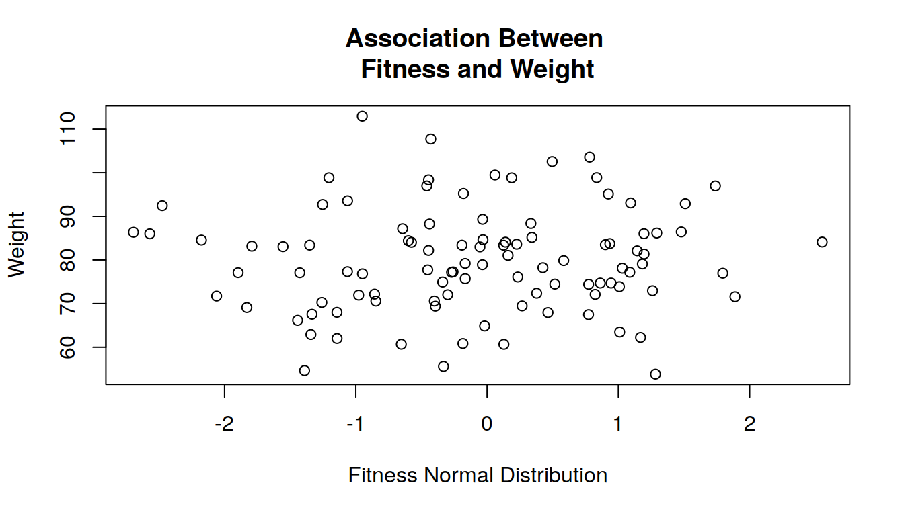
As something new, we can use the \n to split titles across multiple lines. Now how about adding bold and italics to labels? We can do this with expression;
plot(norm, data[, 5], main = "Association Between \nFitness and Weight",
xlab = expression(bold(Fitness~Normal~Distribution)),
ylab = expression(italic(Weight)))
Note, when using expression(), we need to use a ~ to connect words. Given the plot above, use what you learnt last week to change the colour, size and symbol used for all the points.
4.6.1 Pinpointing data
OK, now let’s see how we can pick out single points, and include plots for multiple groups. So, to identify a single point (or multiple points), we want to create an object which gives the x and y coordinates of the points;
y_coord <- data$weight[90] #take 90th element in weight
x_coord <- norm[90] # take 90th element in norm
# create a vector of weight values for elements 1 to 10
y2_coord <- data$weight[1:10]
x2_coord <- norm[1:10] # and the same for norm
plot(norm, data[, 5], main = "Association Between \nFitness and Weight",
xlab = expression(bold(Fitness~Normal~Distribution)),
ylab = expression(italic(Weight)))
# we can then use points to adjust particular points give the co-ordinates above
points(x_coord, y_coord, pch = 15, col = "red")
points(x2_coord, y2_coord, pch = 15, col = "green")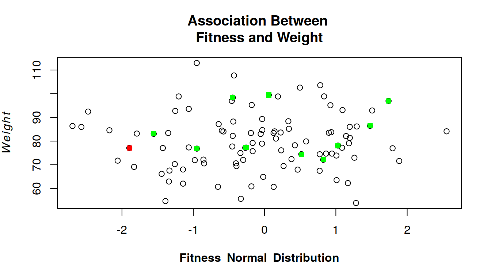
Task: Using xy.coords can be a little tricky at times. Look up the function identify() and see if you can do the same thing.
So that is individual points, now how about 2 groups on the same plot. Let’s have the points for psychologists and linguists coloured differently on our scatterplot.
plot(norm, data[, 5], main = "Association Between \nFitness and Weight",
xlab = expression(bold(Fitness~Normal~Distribution)),
ylab = expression(italic(Weight)),
pch = 15, col = c("blue", "red")[data$programme])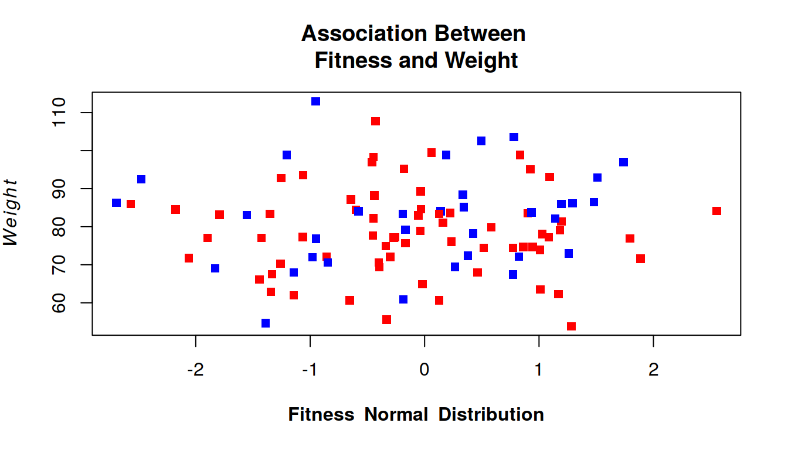
Here we use data$programme to index the colour vector. Provided the variable we use is a factor, and the length of the col vector matches the number of levels, this will work for us.
Now we have different coloured points on the plot, we had better add a legend to explain what they are. So;
plot(norm, data[, 5], main = "Association Between \nFitness and Weight",
xlab = expression(bold(Fitness~Normal~Distribution)),
ylab = expression(italic(Weight)),
pch = 15, col = c("blue", "red"))
legend("topleft", legend = c("Psychology", "Linguistics"),
col = c("blue", "red"), pch = c(15, 15))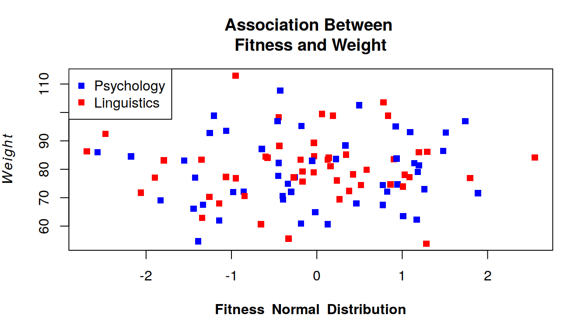
Task: Look at ?legend, and think through why we have put in all the elements we have. Particularly think about why we have used c() to create the different column vectors. As a practice task, change the points symbols and colours in the plot and legend, and move the legend to a different location.
plot(norm, data[, 5], main = "Association Between \nFitness and Weight",
xlab = expression(bold(Fitness~Normal~Distribution)),
ylab = expression(italic(Weight)),
pch = 20, col = c("purple", "darkgreen"))
legend("bottomright", legend = c("Psychology", "Linguistics"),
col = c("purple", "darkgreen"), pch = 20,
bty="n") # gets rid of the box around legent (box type = none)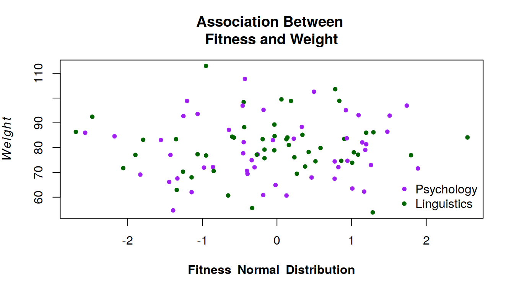
Hint: Look up the help for the function locator(). This has multiple uses, much like identify(), and may be of use when producing your own plots.
One last thing, lets add some lines to our scatterplot. There are multiple reasons why we may want to add lines. Below I add regression lines for psychologists and linguists (more about this in the GLM lectures), vertical and horizontal lines, and curved loess fit lines. Clearly, we would never want all these on one plot, but this is simply to show what can be done. So;
plot(norm, data[, 5], main = "Association Between \nFitness and Weight",
xlab = expression(bold(Fitness~Normal~Distribution)),
ylab = expression(italic(Weight)),
pch = 15, col = c("blue", "red"))
legend("topleft", legend = c("Psychology", "Linguistics"),
col = c("blue", "red"), pch = c(15, 15))
abline(v = 0, col = "green", lwd = 2) # vertical line at norm = 0
# horizontal line at weight = 100
abline(h = 100, col = "black", lty = 5, lwd = 2)
# regression line linguists
abline(lm(data[, 5]~norm, subset = data$programme=="Linguistics"),
col = "red", lwd = 2)
# regression line psychologists
abline(lm(data[, 5]~norm, subset = data$programme=="Psychology"),
col = "blue", lwd = 2)
# lowess line of best fit
lines(lowess(norm, data[, 5]), col = "purple", lwd = 2)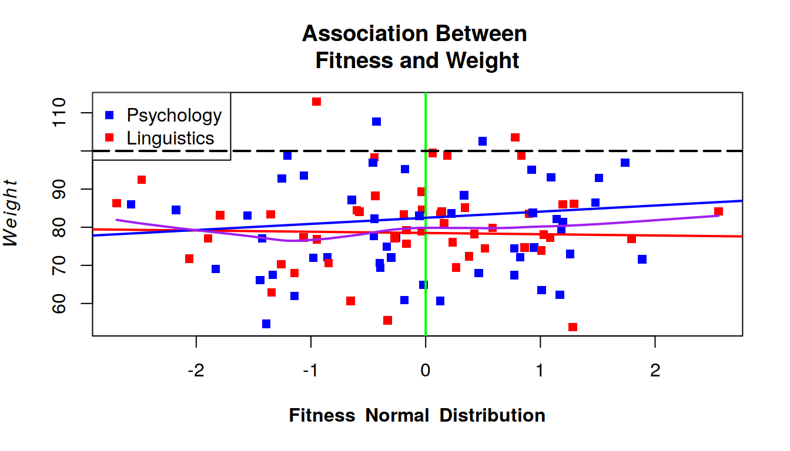
4.6.2 Customising plots
As noted above, many of the plotting features are general across types of plot. One of the last things we should look at is changing the axes on a plot.
hist(data$weight, main = "Histogram for Weight",
xlab = "Weight", ylab = "Frequency", col = "red")So this plot now has some pretty colours, but our axes don’t look very good. The x and y axes don’t join for a start. So let’s get rid of these and draw them ourself:
hist(data$weight, main = "Histogram for Weight",
xlab = "Weight", ylab = "Frequency", col = "red",
axes = F) # this line removes the axes from the plot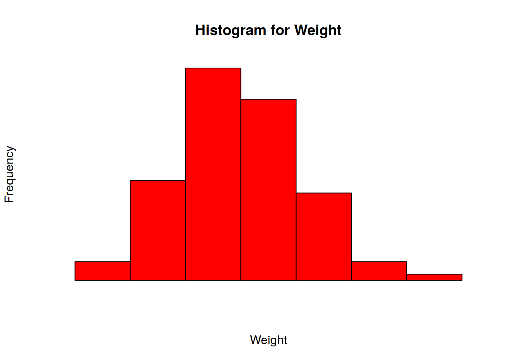
And now we can add some new ones using axis():
hist(data$weight, main = "Histogram for Weight",
xlab = "Weight", ylab = "Frequency", col = "red",
axes = F) # this puts an L shaped box (2 sides) onto our plot
box(bty = "L")
# we can use axis for each side to put the default check marks back
axis(side = 1, xpd = T)
axis(side = 2, xpd = T)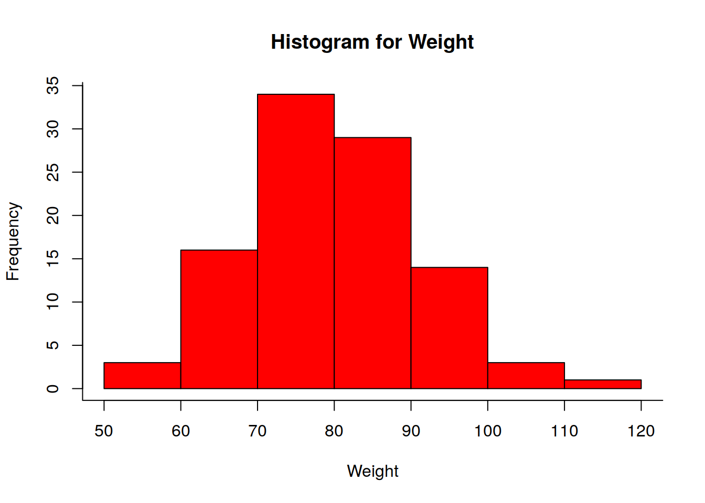
If we want to plot two density plots for two groups on the same plot, there is a useful function in the sm package to help us (we can use all the normal graphical parameters here:
Task: Install and load the package sm.
#install.packages("sm")
library(sm)
This is how it’s done:
sm.density.compare(data$weight, data$programme, col = c("blue", "red"), lty = c(1, 2))
legend("topleft", levels(data$programme), lty = c(1, 2), col = c("blue", "red"))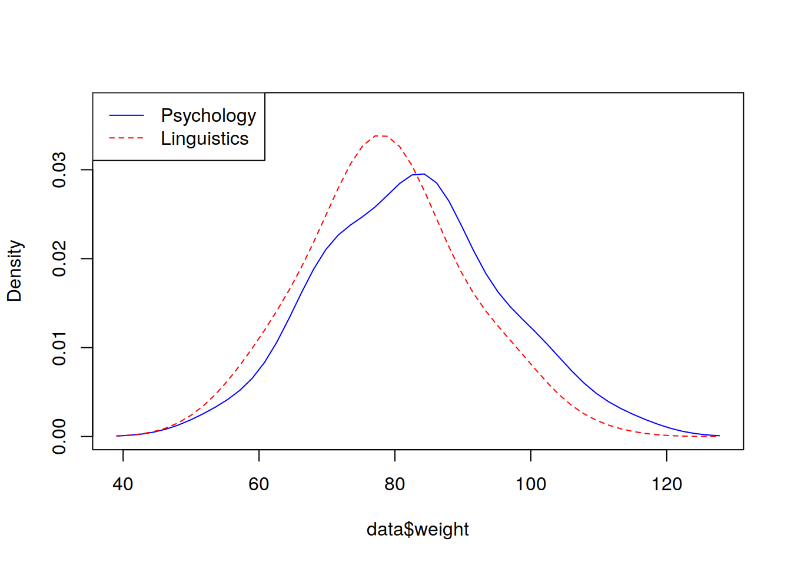
4.7 Multiple Plots in One
So we have now done some fancy things with the basic plots for different types of data. There is one more step that is important to highlight to you with respect to plotting in R. Not only can we have quite fine control over the plots themselves, we can also control the space that the plots are drawn in. The way in which we do this is by adjusting the basic graphical parameters. So let’s follow through a simple example of plotting two plots on top of each other. We will use the code developed above for the plots, so all we need to worry about here is adjusting the space.
# first we use the mfrow command to tell R we want to divide the plotting space
par(mfrow = c(2, 1))
# then we give it the two plots.
# Automatically the first set of code plots the top plot,
# the second the lower plot
sm.density.compare(data$weight, data$programme, col = c("blue", "red"), lty = c(1, 2))
legend("topleft", levels(data$programme), lty = c(1, 2), col = c("blue", "red"))
hist(data$weight, main = "Histogram for Weight",
xlab = "Weight", ylab = "Frequency", col = "red")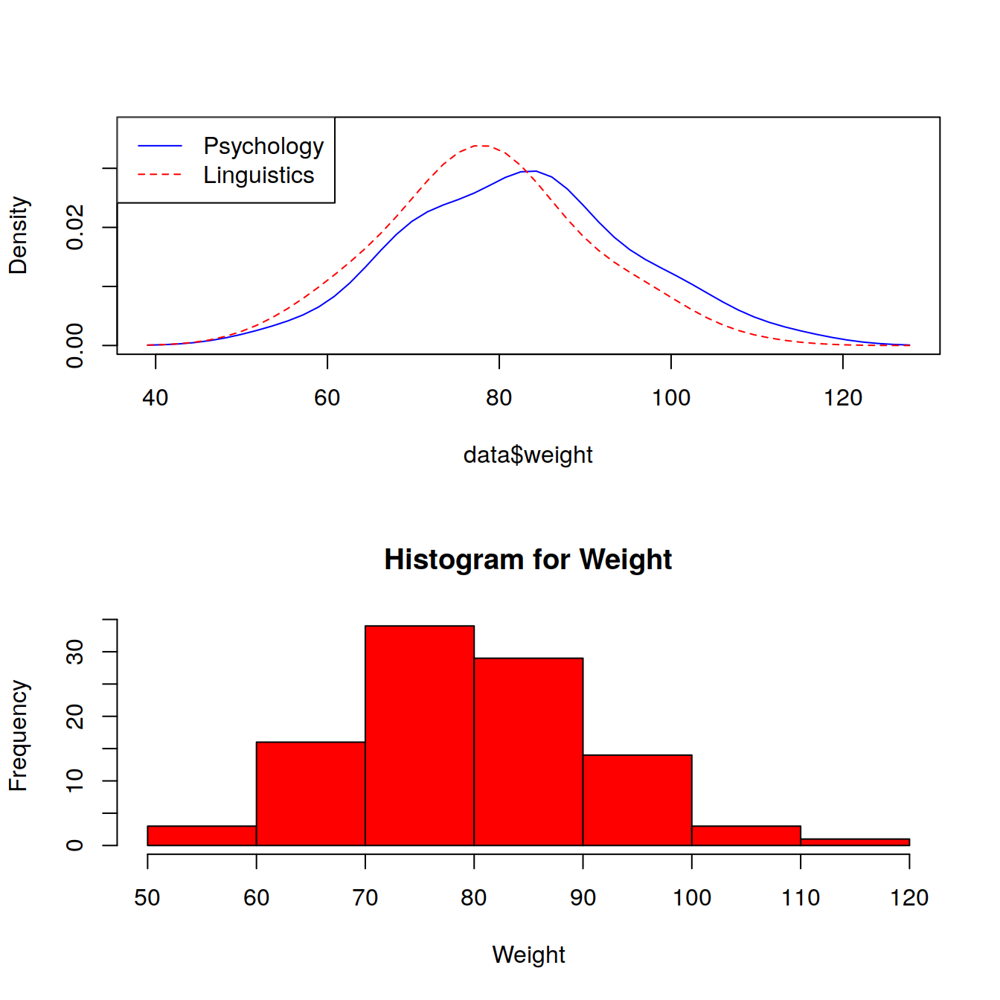
4.7 Plot margins too small?
If you get an error complaining about plot margins being too small, that is beause the plotting window in the bottom right panel of your RStudio is, well, too small for the plot to be rendered. Making it bigger should help.
Task: Use everything you’ve learnt today to create this figure with four plots.
# first we use the mfrow command to tell R we want to divide the plotting space
par(mfrow = c(2, 2))
# then we give it the two plots.
# Automatically the first set of code plots the top plot,
# the second the lower plot
sm.density.compare(data$weight, data$programme, col = c("blue", "red"), lty = c(1, 2))
legend("topleft", levels(data$programme), lty = c(1, 2), col = c("blue", "red"))
hist(data$weight, main = "Histogram for Weight",
xlab = "Weight", ylab = "Frequency", col = "darkred")
plot(data$programme, main = "Bar chart for Programme",
xlab = "Weight", ylab = "Frequency", col = "darkblue")
boxplot(data$weight ~ data$programme , main = "Boxplot for Weight by Programme",
xlab = "Weight", ylab = "Frequency", col = "darkgreen")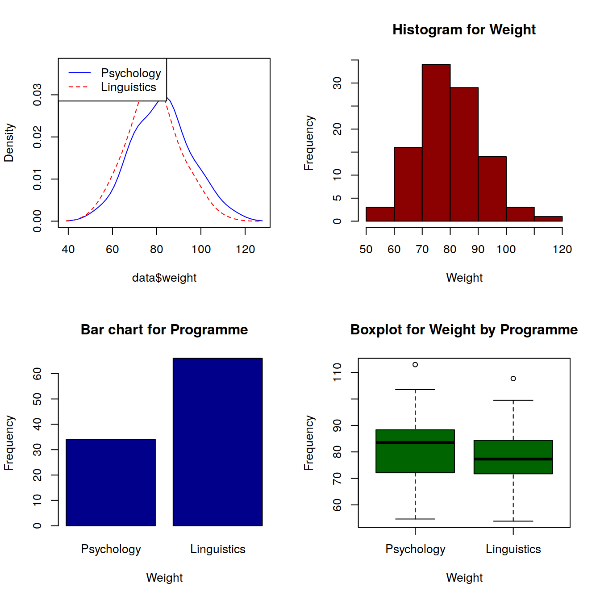
par(mfrow = c(1, 1))Sometimes we may want more space on one side of our plot. If this is the case, we need to change the margins in the plotting space. We do this within par() as well. First though, it can be useful to see what our actual margins are. We can see this by simply typing par(). This produces quite a lot of output as it lists all the graphical parameters settings. But we can just look at the margins using;
check <- par()
check$mar## [1] 5.1 4.1 4.1 2.1Here you have four numbers corresponding to the sides of the plot
- 1 = bottom = 5.1
- 2 = left = 4.1
- 3 = top = 4.1
- 4 = right = 2.1
To change the margins we simple add;
# first we use the mfrow command to tell R we want to divide the plotting space
# then change margins
par(mfrow = c(2, 1), mar = c(3, 1, 1, 1))
# once graphical parameters are changed, you can create plots
sm.density.compare(data$weight, data$programme,
col = c("blue", "red"), lty = c(1, 2))
legend("topleft", levels(data$programme), lty = c(1, 2), col = c("blue", "red"))
hist(data$weight, main = "Histogram for Weight",
xlab = "Weight", ylab = "Frequency", col = "red")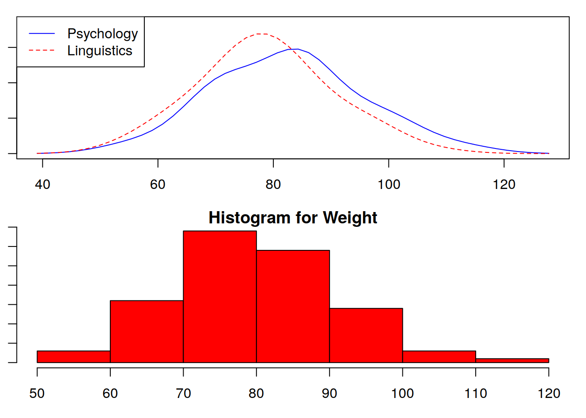
You can see that these are not very good settings. We have lost the title on the top plot, and we have lost the axes labels on the left hand side. However, this does shows you the basics of how to adjust the margins. We will want to set out plotting space back to the default. We do this by simply clicking the “Clear All” option on the plotting screen.
That wraps up the tutorial part of the lab for now. We will do more with plotting in the course of future labs, but for now, this will do us.
4.8 Let’s put all this into practice
Start a new project called something like “Lab 4 Real Data”. This will make it easier to reference back to your project code (above) when answering the questions.
In all the examples above, we have been using randomly generated data. Now let’s (assume!!) we have got some real data (i.e., you have not seen me simulate it).
So, let’s get practising, describing and visualizing our data. First, read the data into R. Look back at the instructions from week 2 if you can not remember how to do this. The data is a .csv file, so you can also look at ?read.csv. The data set is saved on LEARN in the Week 4 folder.
OK, so now I have a list of tasks. All of these should be achievable by looking at the code above and adjusting it for the new names of variables, size of the data set, etc.
First, here is some information about the variables. You will notice there is very little useful labelling in the data set.
4.8.1 Code Book
Variables in the order they appear in the data set:
- Daily energy expenditure (vigorous activity)
- Daily energy expenditure (light activity)
- Programme (0 = Linguistics; 1 = Psychology)
- BDNF-alpha genotype (0 = Risk Allele Not Present ; 1 = Risk Allele Present)
- Attitude to exercise (1-8; 1 = lowest, 8 = highest)
4.8.2 Questions
- Add an ID to the data set. Hint: see Week 2 lab
- Name all variables.
- Add labels to the
programmeandBDNF-alphavariables. - Produce a descriptives table with appropriate measures of central tendency and a column for sample size.
- Produce a frequency plot for Attitude to Exercise and a density plot for Daily energy expenditure (vigorous).
- Plot the association between Daily energy expenditure vigorous activity and light activity.
- Produce a plot to show the relative frequencies of BDNF-alpha risk alleles among psychologists and linguists.
- Produce a plot comparing the densities of daily energy expenditure (light activity) in psychologists and linguists.
- Combine these four plots into one figure.
Good luck!
4.9 Lab 4 GGPLOT
4.9.1 Introduction
Hopefully by now you are starting to see the power of R and the benefits of using such a tool compared to something like SPSS. Once you have mastered some basics you have the skills to go on and complete any number of tasks that wouldn’t be possible without having a full programming environment to work in. The real beauty of R is a combination of it being free to use and the package system for accessing ready-made functions/procedures for completing tasks. We rarely have to start from scratch if we have a complicated task we want to carry out using R (there is most probably a package for it), and if we don’t like the way some things are done by default we don’t have to accept it (there is most probably a package that does it differently). One such example of the second situation is visualising data using the plot() family of functions that is part of the base R installation. While plot can be made to do almost anything you could want it to do, there are alternatives. A package that provides an alternative option for plotting data is ggplot2 by Hadley Wickham.
4.9.2 ggplot2
The syntax for building a graphic in ggplot2 is different from the basic plot() method. Some of you may prefer it, some may not. The point is to use this is an example of how - by using R - we are not forced to do things a certain way but instead can pick from different options (or create our own).
Go ahead and install ggplot2 and load the library.
# install.packages("ggplot2")
library(ggplot2)Now, some data to work with.
# install.packages("gcookbook")
# install.packages("Ecdat")
library(gcookbook)
library(Ecdat)# We can now access a bunch of datasets that are included in these packages.
data() # provides a list of datasets currently accessible in your R environmentYou should see a list of usable datasets under a tab in the editor section of Rstudio (top-left by default). You can use the standard help method to get information on these datasets e.g., ?aapl ?Star.
4.9.3 qplot()
We will start our exploration of ggplot2 with the qplot() function. qplot() works just like plot() in that it is usually very smart and creates the type of plot you want based on the input. For example, when we pass qplot() a single continuous variable it assumes we want a histogram.
qplot(data = Star, tmathssk, binwidth = 25)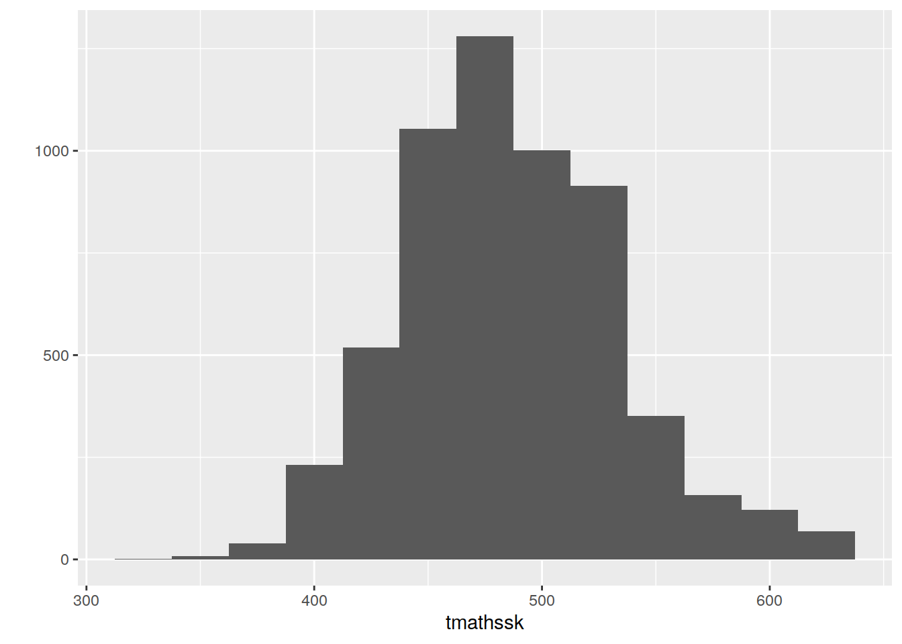
If we give qplot() two numeric variables then it produces a scatterplot.
qplot(data = Star, tmathssk, treadssk)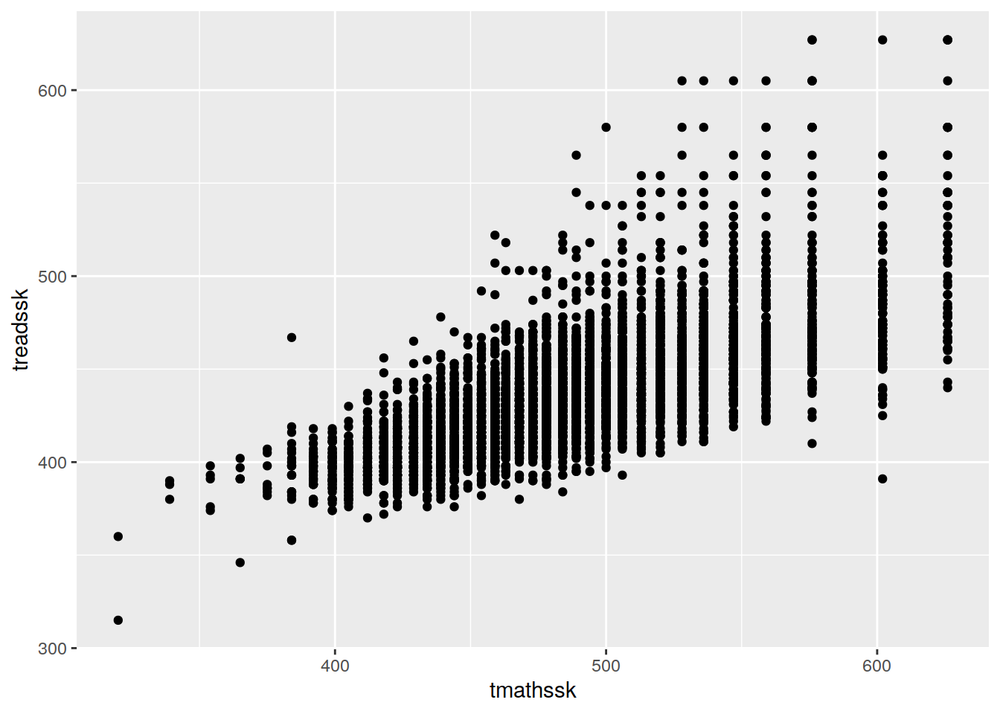
If we provide a single factor variable we get a ‘bar chart’ showing the counts for each level of the factor.
qplot(data = Star, classk)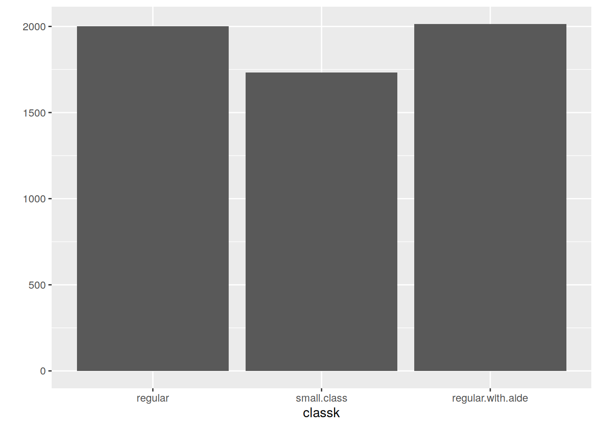
Many of the optional arguments we have played with so far in our plot() figures have an equivalent in ggplot2. Take this plot for example where we use variable mapping to colour points based on levels of a factor:
qplot(data = Star, tmathssk, treadssk, colour = sex)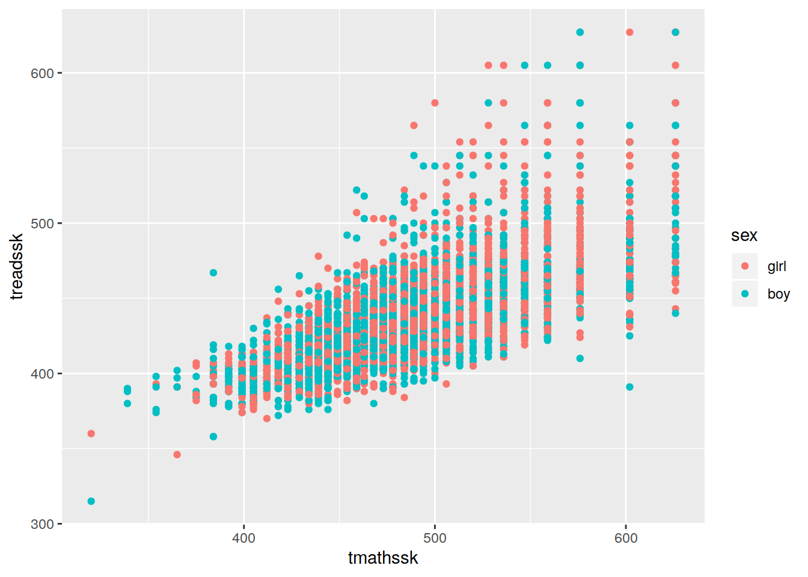
There are plenty of other options and qplot() is clever enough to figure out what king of plot you probably have in mind depending on which arguments you specify. Take for example the fill option: if you specify the fill colour, it will figure out that you are probably looking for a barchart.
qplot(data = Star, classk, fill = sex)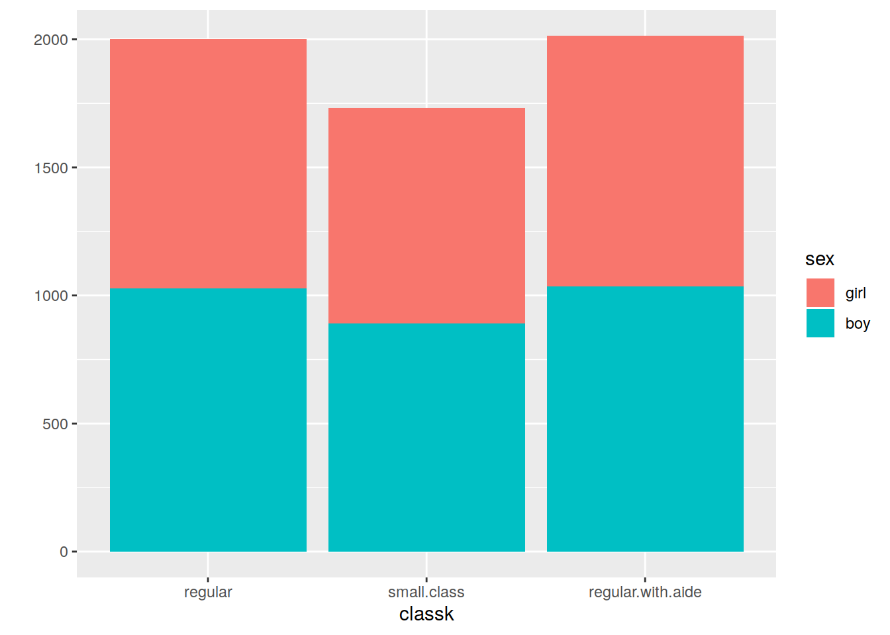
How about time-series type data such as the apple stock price information in the ‘aapl’ data. Notice the use of the geom = argument. Try it without this argument to see what qplot will do by default and why we might want to set geom = "line".
qplot(data = aapl, date, adj_price, geom = "line")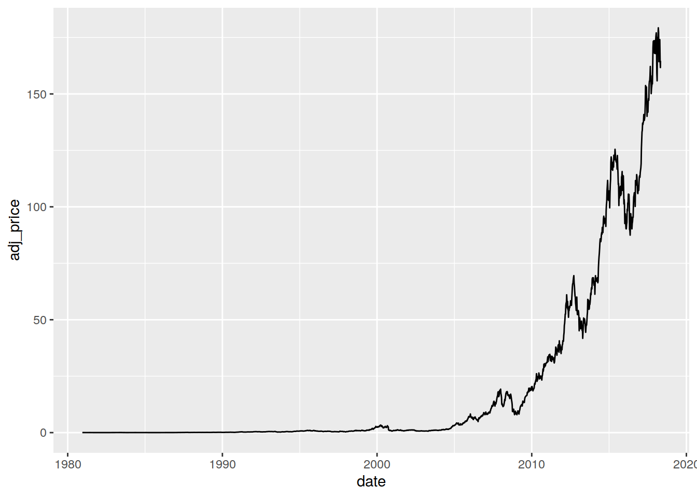
4.9.4 Your Turn
Using qplot() create the following plots:
- Use the ‘mtcars’ dataset to produce a scatter plot visualising the relationship between horsepower and miles per gallon. Also make the points a different colour based on whether the car is an automatic or manual transmission. think about types of variable and conversion methods
- Use the ‘worldpop’ dataset to plot a similar time-series illustration for the growth in world population over the timespan provided. Make your plot show a line describing the relationship but also include the specific points at each time point. You need to think about how you might provide two values to one of the arguments.
qplot(data = mtcars, hp, mpg, colour = factor(am, labels = c("auto","manual"))) +
labs(colour = "Transmission")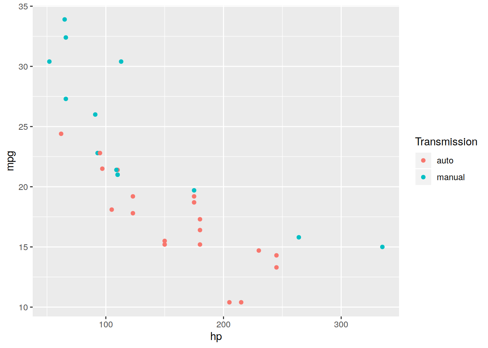
qplot(data = worldpop, Year, Population, geom = c("line","point"))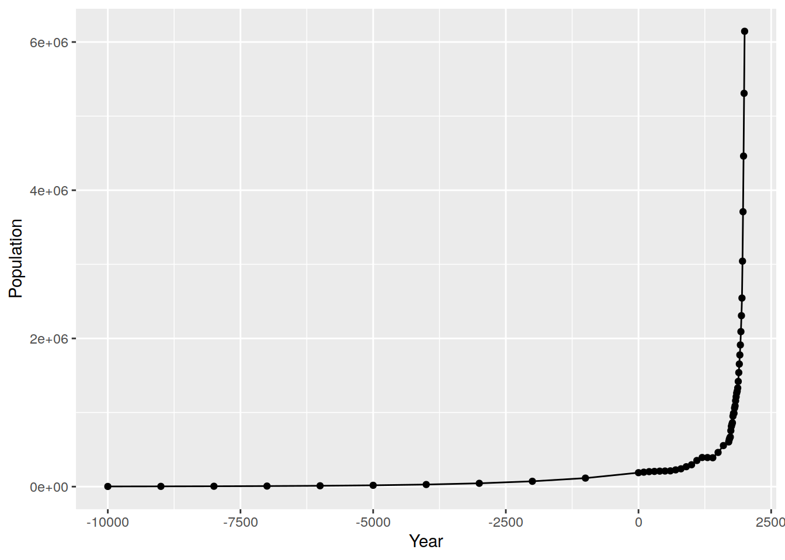
There are many other features that can be used in conjunction with qplot() to get the plot needed. Feel free to use the help ?qplot as well as other online resources to explore these more. Don’t be afraid to just try out changing some of the default values or by specifying extra arguments to simply observe the changes it creates. There is no better way to learn how to get the most out of ggplot than to execute code and observe the results.
This section has served as a little introduction to qplot() but ggplot() is the meatier function in the ggplot2 package. And it is to ggplot() that we now turn.
4.9.5 Using ggplot()
Using the ggplot() function creates a ggplot object within the R environment that is then parsed to create the plot we have defined. By using ggplot() rather than qplot() we can do a lot more. As an introduction to the syntax, let’s look at the code necessary to reproduce some of the plots shown above using ggplot() instead of qplot().
# Scatter plot between math and reading scores in the Star dataset.
ggplot(data = Star) + geom_point(aes(x = tmathssk, y = treadssk))
# Bar chart showing frequencies of each level of the classk variable.
ggplot(data = Star) + geom_bar(aes(x = classk))
# Specifying fill within aes() to be the sex variable plots a barchart of classk by sex.
ggplot(data = Star) + geom_bar(aes(x = classk, fill = sex))
# Adding the position = "dodge" unstacks the bars.
ggplot(data = Star) + geom_bar(aes(x = classk, fill = sex), position = "dodge")
# Reproduce the scatter plot but colour points based on the sex variable.
ggplot(data = Star) + geom_point(aes(x = tmathssk, y = treadssk, colour = sex))
# Time-Series view of the apple stock price
ggplot(data = aapl) + geom_line(aes(x = date, y = adj_price))Try these in your R window and see that they produce the same plots as above. By using ggplot() we are now starting to use the layering approach to making our graphics.
For the vast majority of our needs the following formula will work for us:
ggplot(data)
+ geom_xxxx(aes())
+ extra_option_1()
+ extra_option_n()We start by creating a ggplot object that contains the data we are going to be using ggplot(data). We then need to tell ggplot what type of ‘thing’ we want to add to the plot in the form of a ‘geom’. We have already encountered geom_point(), geom_line(), and geom_bar() in the examples above. For a full list of available geoms see the documentation here. Within the geom_xxxx() call we map variables to aesthetics within the aes() command.
Tip: Use ?geom_xxxx to see what aesthetics can be set (some required, some optional)
Then we can build on the basic plot those steps create by adding other ‘geoms’ or options on top of that. Let’s put that in to action.
The ‘movies’ dataset included in the ggplot2movies package contains information on over 50,000 films. Install the package if you haven’t aleady done so and load it. Use the help page (?movies) to see what some of the included variables are. Let’s use this dataset to create some plots summarising some of this information.
# install.packages("ggplot2movies")
mov <- ggplot2movies::movies # puts movies in my environment so I can 'see' it
mov$cyear <- cut(mov$year,5)
mov$cyear <- factor(mov$cyear, labels = 1:5)
# Here, we have added a categorical variable that reflects the age of the movies.
# The movies span a period of approx 100 years (range(mov$year)) so each level of
# the new cyear variable reflects approximately a 20-year window where 1
# represents the oldest movies and 5 the newest movies.
# define our initial ggplot object with the data to use.
epic_plot <- ggplot(data = mov)
epic_plot + geom_point(aes(x = cyear, y = rating), position = "jitter")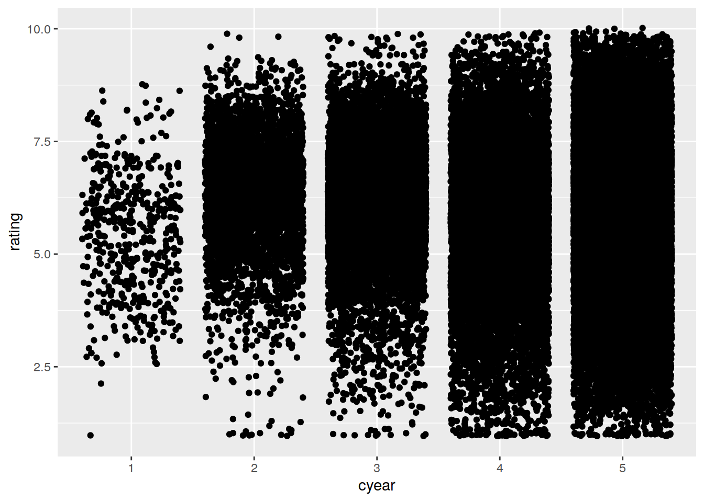
# confused by position = "jitter", run the command without it and compare.
# We have a LOT of films in the more recent categories. We can use
# the alpha option to add transparency to the points to make it easier to see.
epic_plot + geom_point(aes(x = cyear, y = rating),
position = "jitter", alpha = 0.1)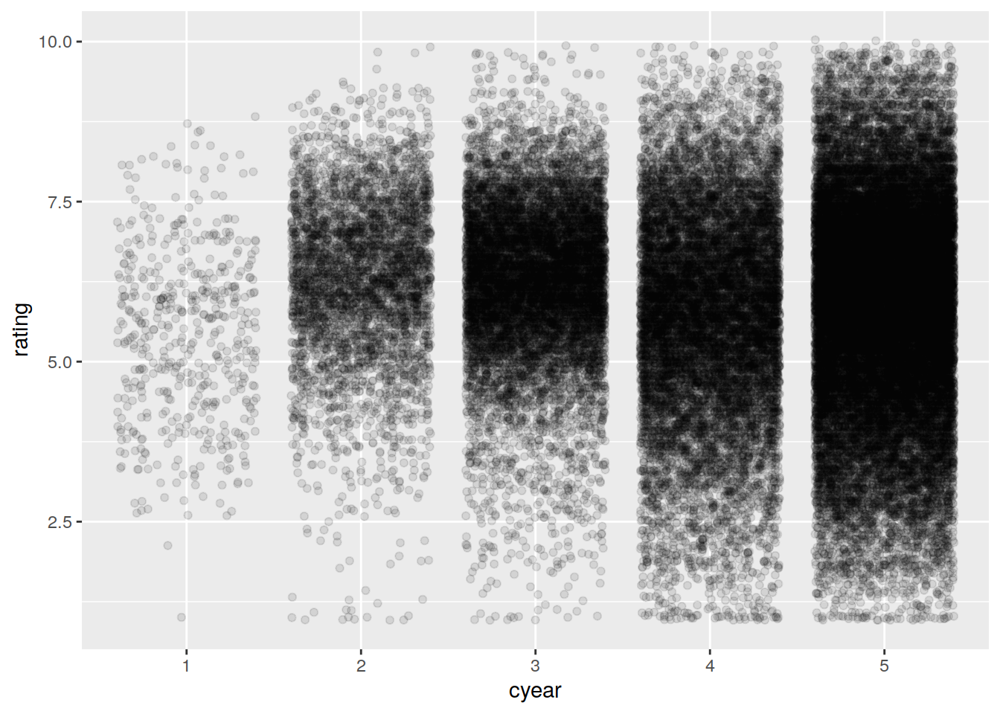
# A boxplot might be more informative for summarising this data....but we
# want to keep the raw data points plotted also. We can add an additional
# layer to the plot:
epic_plot +
geom_point(aes(x = cyear, y = rating), position = "jitter", alpha = 0.1) +
geom_boxplot(aes(x = cyear, y = rating))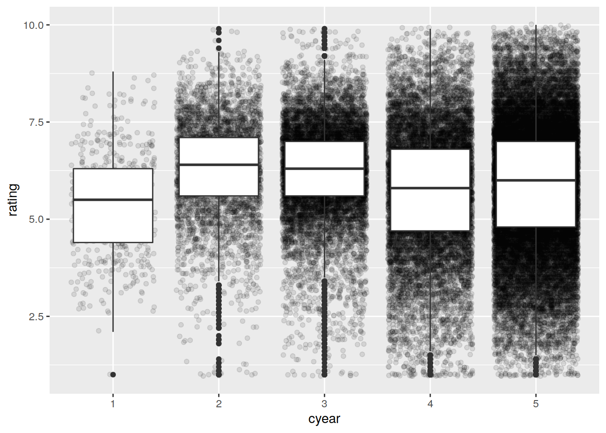
# Notice that we have added to the plot we previously had, the addition
# of the geom_boxplot layer hasn't interfered with what came before it.
# Re-do that plot with some additional options to the boxplot_geom
epic_plot +
geom_point(aes(x = cyear, y = rating),
position = "jitter", alpha = 0.1) +
geom_boxplot(aes(x = cyear, y = rating),
fill = NA, outlier.colour = NA, colour = "green")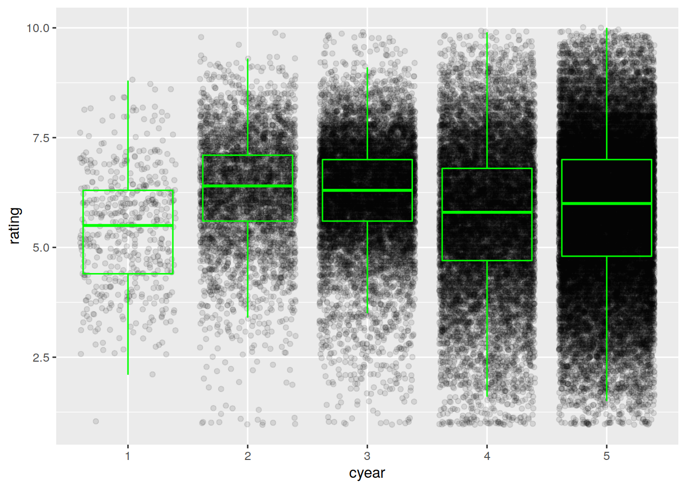
# Let's tidy up the labels so we can show off our plot
epic_plot +
geom_point(aes(x = cyear, y = rating),
position = "jitter", alpha = 0.1) +
geom_boxplot(aes(x = cyear, y = rating),
fill = NA, outlier.colour = NA, colour = "green") +
labs(title = "Film Quality Over Time",
x = "Year Quintile", y = "IMDB User Rating")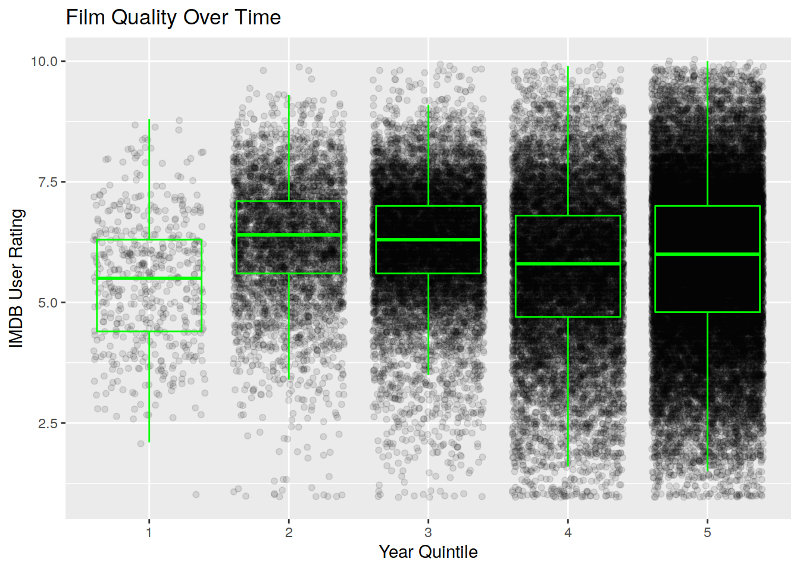
Phew! That may have felt a bit long-winded because of the repeating code but in practice we wouldn’t have needed to repeat so much, we did it in more stages than necessary to learn from it. The principle of building up a graphic in layers is evident from this example.
4.9.5 Aesthetics
Note that when we are mapping variables to aesthetics we put that code inside the aes(), but when we are setting an aesthetic property to a static value it goes outside the aes().
4.9.6 Your Turn
Let’s have a closer look at whether film length might be related to user ratings.
# First inspect the length variable
library(psych)
describe(mov$length)## vars n mean sd median trimmed mad min max range skew
## X1 1 58788 82.34 44.35 90 84.63 17.79 1 5220 5219 31.07
## kurtosis se
## X1 3341.86 0.18
Some films in the database have extreme lengths (both short and long, look at the min and max). For the purposes of this exercise we will only look at standard film lengths and we will also narrow the data down to popular films (based on the number of ratings made). Execute the following commands:
mov <- subset(mov, length > 75 & length < 200)
mov <- subset(mov, votes > 2000)
# use ?subset if you are unsure how this command works.
describe(mov$length)## vars n mean sd median trimmed mad min max range skew kurtosis
## X1 1 3005 109.81 19.12 106 107.82 16.31 76 198 122 1.21 2.17
## se
## X1 0.35describe(mov$votes)## vars n mean sd median trimmed mad min max range
## X1 1 3005 9844.78 13204.39 5376 6984.08 4133.49 2001 149494 147493
## skew kurtosis se
## X1 4.35 26.73 240.88
Now that the mov dataset is restricted to only movies within our acceptable range of values, produce the following plots exactly as seen here:
epic_plot_2 <- ggplot(data = mov)
epic_plot_2 +
geom_point(aes(x = cyear, y = length), position = "jitter", alpha = 0.5) +
geom_boxplot(aes(x = cyear, y = length),
fill = NA, outlier.colour = NA, colour = "pink") +
labs(title = "Movie Length Over Time",
x = "Year Quintile", y = "Movie Length (minutes)")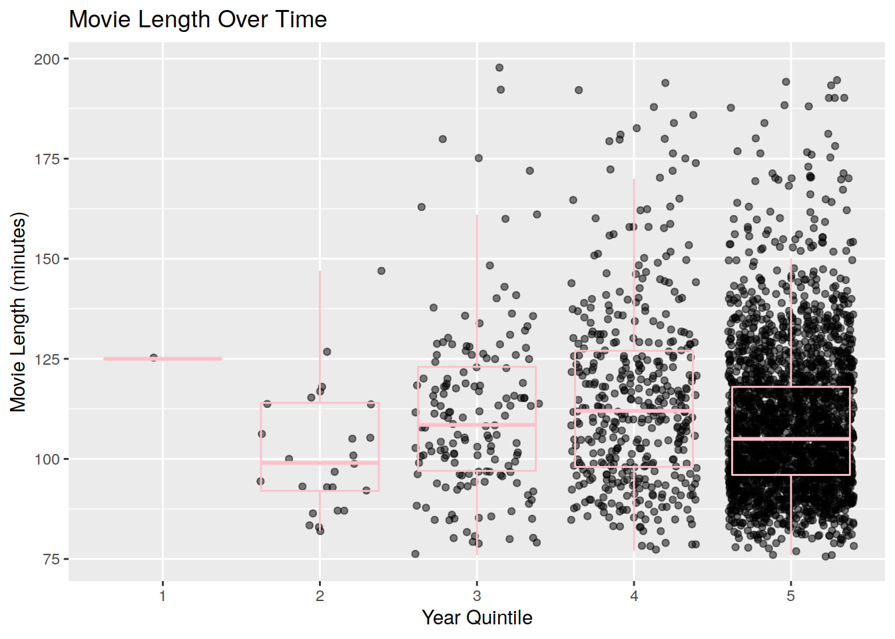
mov2 <- subset(mov, year > 1980)
epic_plot_3 <- ggplot(data = mov2)
epic_plot_3 +
geom_point(aes(x = year, y = length), position = "jitter", alpha =0.5) +
labs(title = "Film Length by Year (1980-2005)",
x = "Year Released", y = "Film Length (Minutes)")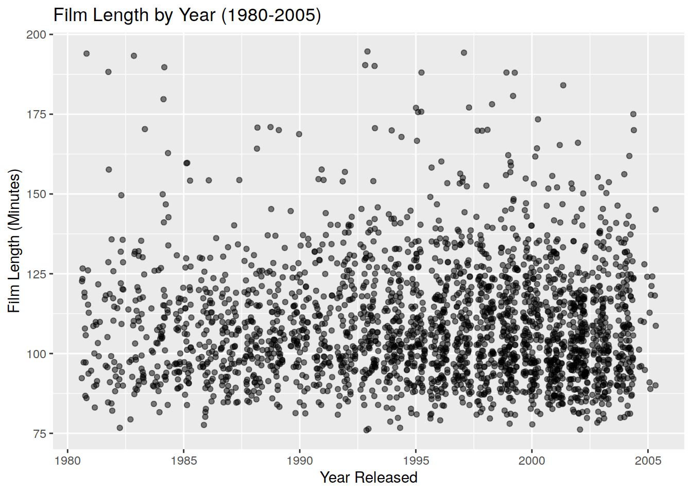
epic_plot_4 <- ggplot(data = mov)
epic_plot_4 +
geom_point(aes(x = length, y = rating)) +
geom_smooth(aes(x = length, y = rating)) +
labs(title = "Relationship Between Movie Length and User Rating",
x = "Movie Length (minutes)", y = "Mean IMDB User Rating")## `geom_smooth()` using method = 'gam' and formula 'y ~ s(x, bs = "cs")'
Tip: For the final plot look up ?geom_smooth
That’s it for now regarding ggplot2 although we’ve only really scratched the surface of its potential. You are encouraged to keep exploring!